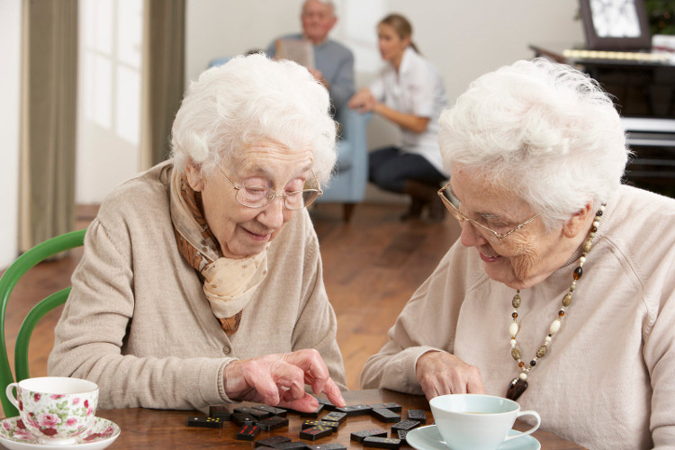

La nostre marca
Rehabilitació en grup
Que és?
És una rehabilitació amb usuaris amb necessitats similars. Aquesta està guiada per una fisioterapeuta que, prèviament, ha estudiat cada cas dels nostres usuaris.
_________________________________________
Quin tipus de rehabilitació realitzem?

Classes de Llengua de signes i Braille
Què és?
La llengua de signes és una llengua de caràcter visual i gestual, que ajuda a les persones amb hipoacúsia.
El braille és un sistema de lectura i escriptura tàctil, que ajuda a les persones cegues.
Com ho fem?
Aquestes classes es realitzen en el nostre centre amb un professional de braille i un altre de llengua de signes.

horaris
La classe de llengua de signes es realitza cada dilluns de 16 h a 17:30 h.
La classe de braille es realitza cada dimecres de 10 h a 11:30 h.